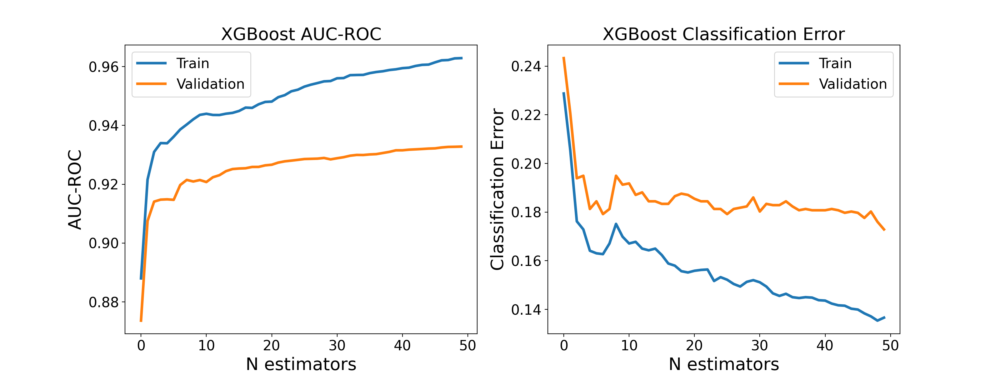
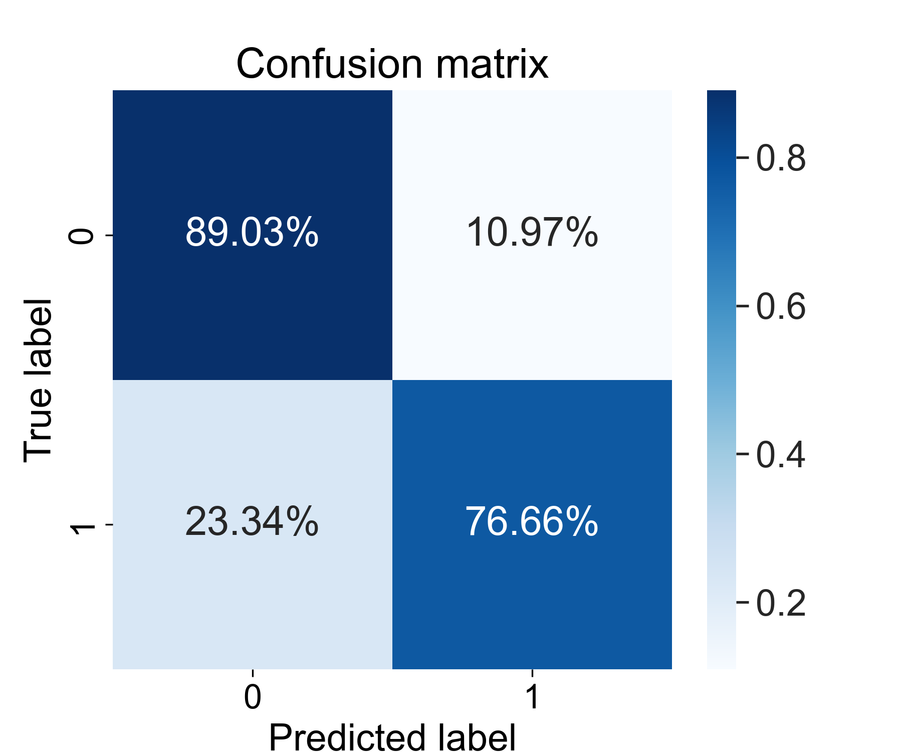

Objective
Classify mouse pups as Wild-Type (WT) or ASD-model (HET) based on ultrasonic vocalization (USV) features extracted from audio recordings.
Dataset
- 9,515 syllable-sequence samples from aggregated recordings (previously 7,322)
- 46 features per sample (syllable frequencies, durations, distributions, ISI, sex, age, strain)
- 87 mice across 5 recording years: 2015, 2018, 2022, 2023, 2024
- Strains: BALB/c (2015, 2018, 2023, 2024) and BALB/c × C57BL/6 F1 hybrid (2022)
- Split: 60% train / 20% validation / 20% test
- Class ratio in test: 802 HET vs 1,101 WT
Improvement vs. Previous Model (2015–2022)
Adding 2023 and 2024 data (+2,193 samples, +30%) significantly improved classification across all key metrics:
76.0%
81.9%
Test Accuracy (+5.9%)
0.77
0.82
Weighted F1 (+0.05)
0.58
0.74
HET Precision (+0.16)
Key Results
81.9%
Test Accuracy
▲ +5.9% from prev.
0.82
Weighted F1-Score
▲ +0.05 from prev.
86.3%
Train Accuracy
▲ +6.5% from prev.
Per-Class Performance
| Class | Precision | Recall | F1-Score | Support |
|---|
| 0 — HET (ASD-model) | 0.74 | 0.89 | 0.81 | 802 |
| 1 — WT | 0.91 | 0.77 | 0.83 | 1,101 |
| Weighted Avg | 0.83 | 0.82 | 0.82 | 1,903 |
Comparison with Previous Model
| Metric | 2015–2022 | 2015–2024 | Change |
|---|
| Test Accuracy | 76.0% | 81.9% | +5.9% |
| HET Precision | 0.58 | 0.74 | +0.16 |
| HET Recall | 0.92 | 0.89 | -0.03 |
| HET F1 | 0.71 | 0.81 | +0.10 |
| WT Precision | 0.94 | 0.91 | -0.03 |
| WT Recall | 0.69 | 0.77 | +0.08 |
| WT F1 | 0.80 | 0.83 | +0.03 |
| Samples | 7,322 | 9,515 | +2,193 |
Confusion Matrix
| Predicted HET | Predicted WT |
|---|
| Actual HET | 714 | 88 |
| Actual WT | 257 | 844 |
Strengths
- High HET recall (89%) — nearly all ASD-model mice are correctly detected.
- High WT precision (91%) — when the model predicts WT, it is almost always correct.
- Model is more balanced than before — both classes now have F1 above 0.80.
- Small train-test gap (86.3% vs 81.9%) — no significant overfitting.
- Improvement came from more data, not parameter tuning — same hyperparameters as previous model.
Remaining Weaknesses
- WT recall is 77% — the model still misclassifies 23% of WT mice as HET (257 false positives).
- HET precision (74%) means ~1 in 4 HET predictions are false alarms — improved from 42%, but room remains.
Top Feature
The single most important feature remains avg_ISI_time (average inter-syllable interval), contributing 60% of total feature importance. Vocalization timing patterns continue to be the strongest differentiator between WT and ASD-model mice.
Training Curves & Feature Importance


Conclusion
Expanding the dataset from 7,322 to 9,515 samples (adding 2023–2024 recordings) yielded a +5.9% improvement in test accuracy and a much more balanced classifier. The model now achieves 81.9% accuracy with a weighted F1 of 0.82, making it a solid baseline for USV-based ASD screening. Further gains may come from hyperparameter tuning, temporal feature engineering, or ensemble methods.